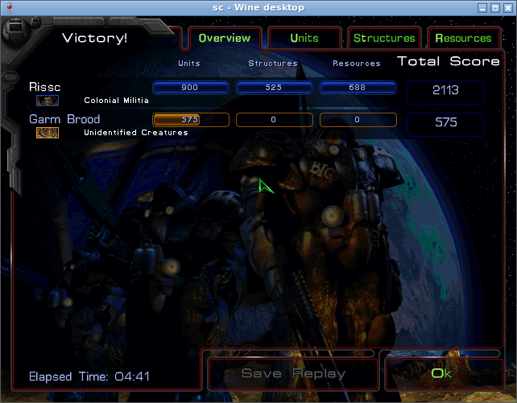
Первую победу в оригинальной кампании StarCraft взяла небольшая программа на Python. В ней записаны правила вроде «добывай минералы, построй казарму, обучи десять морпехов». Правила писали агенты Claude Code, а игра шла в видимом окне на сервере. Я поставил цель и достал диск с игрой. Главный агент раздавал задачи. Исполнители запускали игру, разбирали её устройство и писали программу. Сейчас пройдены три миссии первого эпизода, четвёртая в работе. Вся работа заняла около десяти часов одного сеанса.
Гайд для тех, кто знает StarCraft или хотя бы видел его. Программу к игре вы не подключали и про разбор готовых программ не слышали. Технических подробностей здесь мало, объяснений много. Я расскажу, как мы запустили игру, как программа её видит, как мы проверяем победу и что ломалось по дороге. Принципы в конце пригодятся для любой игры и любой задачи, которую вы отдаёте агентам.
Ты главный мозг и стратег всего и вся. Цель: пройти кампанию.
Мои слова главному агенту в первые минуты работы
- Кампания
- Сюжетные миссии игры. В оригинальном StarCraft три эпизода: терраны, зерги и протоссы. Мы идём по порядку и начали с терранов.
- Оркестратор
- Главный агент. Раздаёт задачи другим агентам, принимает результат и записывает его в репозиторий. Сам он не играет и игру не разбирает.
- BWAPI
- Открытая библиотека, через которую программа видит игру и отдаёт ей команды, как игрок мышью. На ней сообщество строит программы-игроки для StarCraft.
- Мост
- Маленькая программа на Java, которая стоит между игрой и нашей программой-игроком. Она пересказывает программе, что видно на карте, и передаёт игре её команды.
- Программа-игрок
- Скрипт на Python, который получает от моста описание карты и отвечает командами. В наших рабочих файлах она называется политикой.
Зачем это и по каким правилам играть
Началось с моей фразы про оригинальный StarCraft: «научиться им играть». Программы-игроки для StarCraft давно бьются друг с другом на турнирах вроде SSCAIT. Описания, как такая программа проходит сюжетные миссии, мы не нашли. Один из разработчиков BWAPI пишет в обсуждении, что кампания с ними работала всегда. Проверять пришлось самим.
На моём Mac уже стоял современный StarCraft Remastered. Программы-игроки с ним не работают, сообщество сидит на старой версии 1.16.1. Её архив лежит на сайте Дейва Чёрчилла. По словам сообщества, Blizzard разрешила раздавать его для ИИ. Remastered мы не трогали.
До первого запуска мы записали в файл правил условия честной игры:
- Окно игры видно. Его можно смотреть в браузере, и все скриншоты сняты с него.
- Туман войны включён. Программа знает только то, что видит игрок.
- Читов нет. Коды на ресурсы и карту запрещены, ввод человека не подменяется, сохранения не подделываются.
- Миссия засчитана по экрану. Считается только родной экран игры «Victory!» в её окне.
- Не пройдено значит не сказано. Если победы нет на экране, мы её не объявляем.
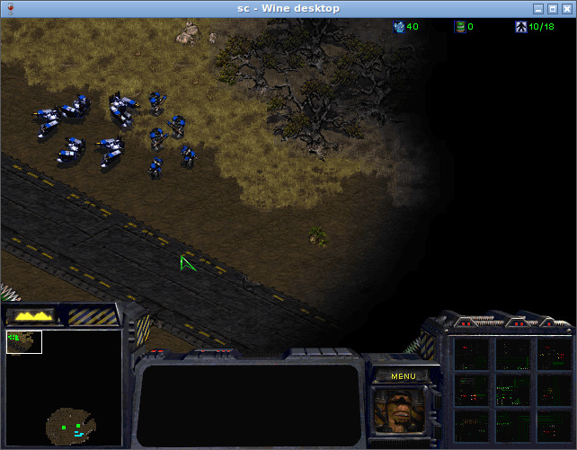
Где запустить старую игру, если она падает
StarCraft 1.16.1 написан для 32-битной Windows. На других системах такие игры запускает Wine: программа, которая подменяет собой Windows. На моём Mac с процессором M1 игра и её загрузчик падали. Мы пробовали две версии Wine и до главного меню так и не дошли.
Исследователь нашёл причину. Это известная ошибка Wine на Mac с Apple Silicon, номер 60034. Исправление есть, но его надо вручную вшивать в сборку Wine. Оркестратор пошёл в обход и перенёс игру на сервер с обычным процессором x86.
На сервере игре выделили контейнер: отдельную изолированную систему, у нас это Ubuntu 24.04. Первая попытка на Debian с Wine 10 тоже упала, на другой известной ошибке. Wine 9 игру запустил. Ей нужен экран 640 на 480 с 256 цветами, поэтому она живёт в отдельном виртуальном окне. Экран у контейнера тоже виртуальный, а смотрю я его в браузере через защищённый туннель.
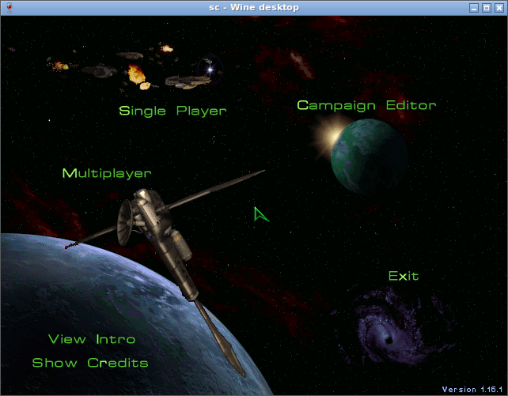
Откуда взять кампанию
В архиве с сайта Чёрчилла есть только сетевая игра и карты. Файл кампании там пустышка на три мегабайта. Без данных кампании сюжетные миссии не запустить.
Агентам я дал образ своего диска с оригинальным StarCraft: «вот тут у меня игра лежит». Кампания на нём спрятана в установщике INSTALL.EXE. Он и есть тот архив данных, который ищет игра. Старая заметка Blizzard к патчу 1.15.2 советует положить его в папку игры под именем StarCraft.mpq. Мы так и сделали, и игра сама предложила эпизод «Rebel Yell».
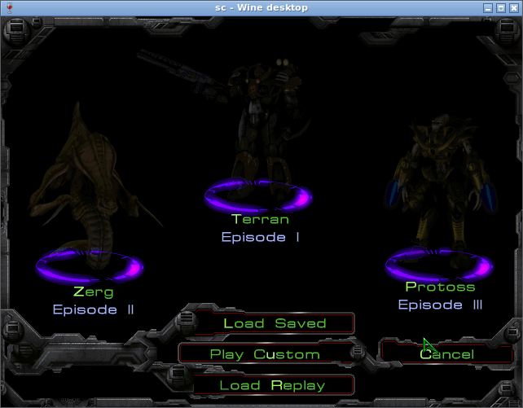
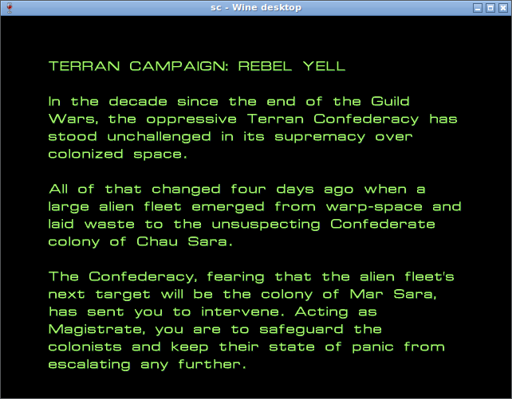
Первой в кампании идёт обучающая миссия. Мы пропустили её кнопкой Skip Tutorial, которую игра предлагает сама. Дальше идёт «Wasteland», первая настоящая миссия. Дополнение Brood War ждёт полного образа второго диска: у меня пока только его часть.
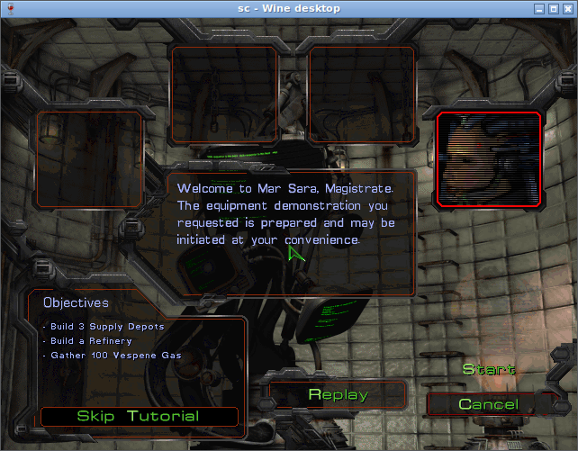
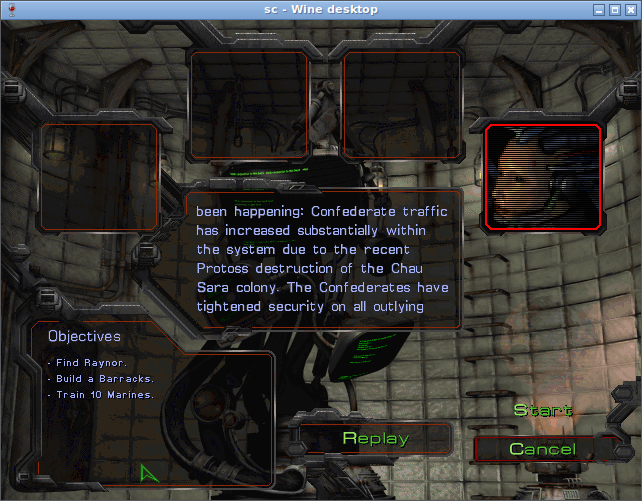
Как программа видит игру и командует
Сама игра команды от программ не принимает. Это умеет BWAPI: она встраивается в запущенную игру, показывает программе, что происходит, и передаёт юнитам её приказы. К BWAPI подключается наш мост на Java. Он запускается рядом с игрой под тем же Wine. Программа-игрок на Python живёт отдельно и говорит с мостом короткими текстовыми сообщениями.
Каждые несколько кадров мост отправляет наблюдение: свои юниты, видимые враги, минералы и газ. Программа отвечает списком команд: отправить рабочих добывать, построить склад, атаковать. BWAPI проверяет, что команда допустима, и результат приходит в следующем наблюдении.
Честность держит сам мост. Чужие подвижные юниты вне поля зрения в наблюдение не попадают. Здания и ресурсы передаются, только если игрок их уже видел. Настройка, которая открывает всю карту, выключена. Мышь человека внутри игры отключена, как принято у программ-игроков.
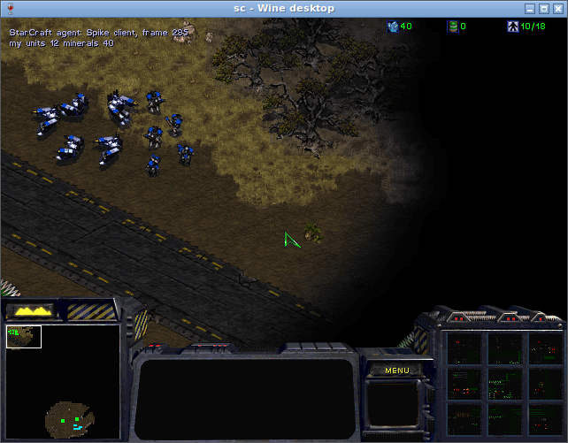
С брифингами, экранами итогов и меню программа-игрок не работает. Там кнопки нажимает отдельный скрипт, который двигает мышь так же, как человек. Тексты заданий BWAPI не отдаёт, поэтому цели миссии оператор окна читал в диалоге на экране.
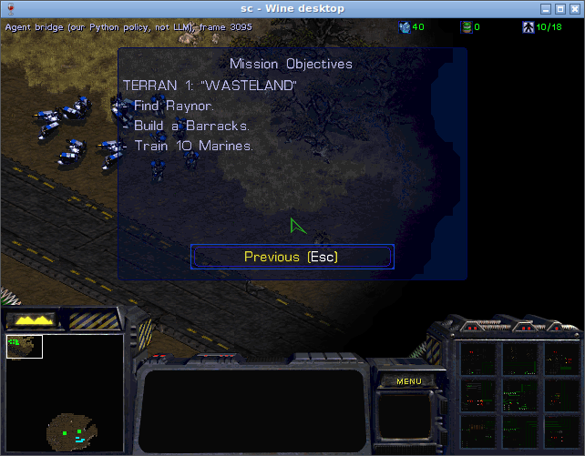
Играет список правил на Python, и агенты пишут его миссию за миссией. Языковая модель во время матча в игру не вмешивается. Поверх игры мост печатает строку «Policy: our Python rules (not LLM)», чтобы это было видно на каждом скриншоте. Мосту всё равно, кто ему отвечает. Языковую модель можно поставить на место правил, но мы этого пока не пробовали.
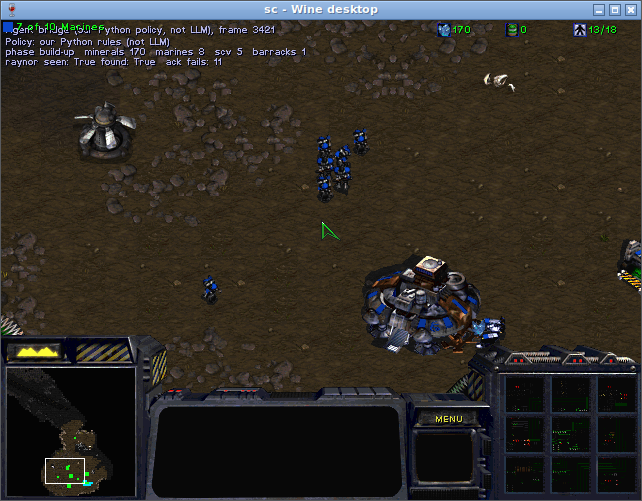
Как понять, что миссия пройдена
Слову программы-игрока «я победила» верить нельзя. BWAPI тоже не знает, как устроено условие победы: оно записано скриптом внутри карты, и выполняет его сам StarCraft. Нам нужно было узнать, где игра записывает итог миссии.
Для этого мы завели разборщика. Он работает с REA, переходником между агентом и Ghidra. Ghidra бесплатно разбирает готовые программы: показывает, что делает файл игры, когда исходного кода нет. Агент спрашивает, что делает кусок кода по такому-то адресу. В ответ приходит объяснение с оговорками и номером улики. Нужные адреса подсказало сообщество: они открыто лежат у BWAPI и OpenBW. REA сверил их с настоящим файлом игры, и роли кусков совпали.
Разборщик игру не запускал, он читал файл на отдельной машине. Запросов было больше полусотни, каждый около двух минут. Разбор мы ограничили этой задачей и не публикуем из игры ни строчки кода.
Вот как StarCraft ведёт счёт победам. Скрипт карты выполняет действие Victory, и игра пишет число 3 во временную записку для этого игрока. Записку регулярно стирают, полагаться на неё нельзя. Судья игры копирует результат в постоянную таблицу из восьми ячеек, по одной на игрока. Тройка в ячейке значит победу, двойка поражение. Нашу ячейку мы только читаем из памяти игры. Программе-игроку эти данные не достаются: они нужны для проверки.
Запись H3 в журнале REA, номера улик ev_7fcd1d9c, ev_963219cd, ev_424feb17 (манифест разбора)
| Вопрос | Что нашли | Запись |
|---|---|---|
| Где игра хранит победу и поражение | Постоянная таблица из восьми ячеек. 3 победа, 2 поражение | H3 |
| Что игра делает после победы | Экран итогов, потом меню кампании и брифинг следующей миссии | H5, H8 |
| Как игра помнит прогресс | Файл игрока хранит самую дальнюю открытую миссию каждой расы | H9 |
| Куда уходят команды | Все приказы проходят через одну очередь. BWAPI встаёт перед ней и глушит мышь человека | H2 |
| Как враг выбирает сценарий | Сценарий врага запускает сама карта по короткому коду | H4 |
Победу мы подтверждаем тремя способами:
- Экран. В окне игры стоит «Victory!», время и счёт.
- Память. Ячейка нашего игрока равна 3, а игра переключилась с миссии на экраны итогов.
- Файл игрока. После нажатия Ok файл записал, что открыта следующая миссия, и её брифинг открылся сам.
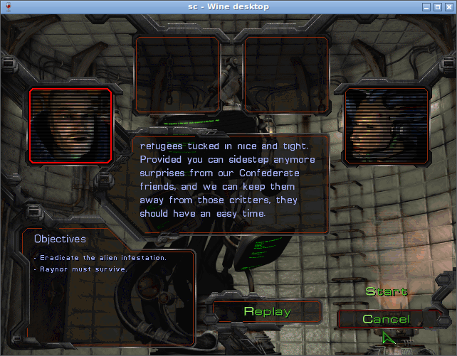
Остались две оговорки. Экран итогов сам не закрывается: два снимка с промежутком в 23 секунды одинаковы. Поэтому кнопку Ok нажимает скрипт, как человек. Кнопка Save Replay на этом экране серая: кампания не пишет реплей, запись матча. Реплей пишет BWAPI, но до конца его воспроизвести не вышло: он встаёт на паузе. Реплеи в зачёт пока не идут.
Один раз игра повела себя не так, как предсказал разбор. По коду после победы должен был включиться один режим, а включился другой. Мы записали это в журнал как вопрос и ничего не подгоняли.
Что уже пройдено
Три миссии первого эпизода за терранов. Каждую выиграла наша программа-игрок в чистом запуске: свежая игра, одна программа без перезапусков, экран «Victory!» в окне. Кнопки меню и брифингов нажимал скрипт, но играла программа.
Wasteland
Цели: найти Рэйнора, построить казарму, обучить десять морпехов. Программа отправила рабочих добывать, построила склад и казарму и стала выпускать морпехов. Рэйнор перешёл под наше управление в первые секунды. Как это устроено в скрипте карты, мы не выяснили.
Первый запуск тоже закончился победой, но программу в нём перезапускали руками. Пока её не было, зерги убили четыре из пяти рабочих. Мы эту победу не засчитали. Второй запуск, чистый, прошёл за 4 минуты 41 секунду.
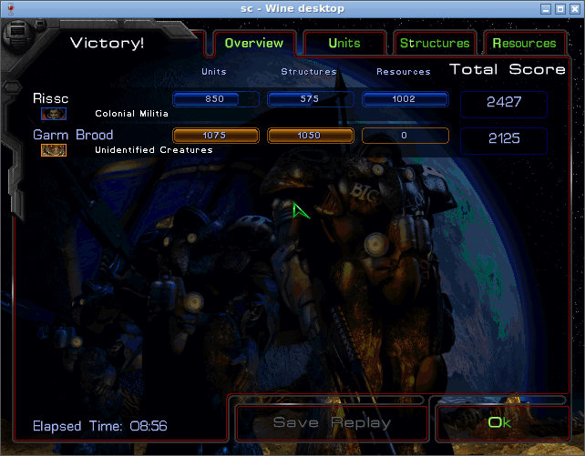
Backwater Station
Цели: уничтожить заражённый командный центр, Рэйнор должен выжить. Программа собрала шестнадцать морпехов и повела их к границе исследованной карты на северо-восток. У зергов на пути отряд потерял около тринадцати бойцов. Центр нашли и разрушили. Рэйнора программа держала у базы. Победа с первой попытки, на экране итогов 10 минут 29 секунд. Между второй и третьей миссиями игра сама показывает ролик на полторы минуты.
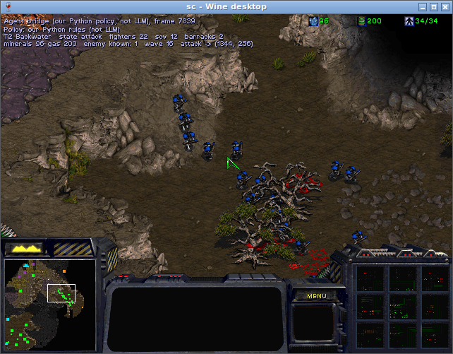
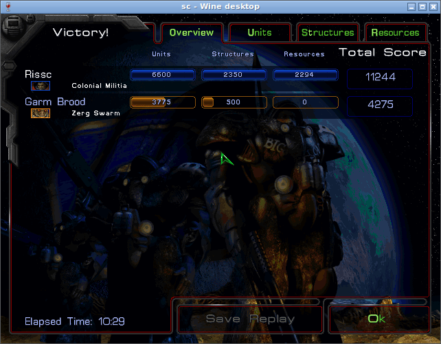
Desperate Alliance
Цель: продержаться тридцать минут. Программа поставила два поста у стартовых бункеров и стала достраивать вокруг них бункеры и башни. Морпехи делились поровну, по четверо заходили внутрь, рабочие чинили. Враг почти не показывался. За две минуты до конца таймера на западный пост пришла волна с воздуха и с земли. Бойцов осталось 51 из 82, зданий мы не потеряли ни одного. Газ в этой миссии не добывали, огнемётчиков и медиков не использовали.
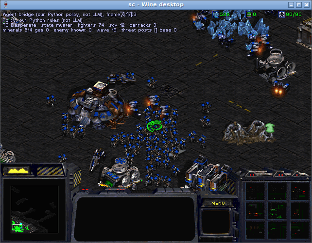
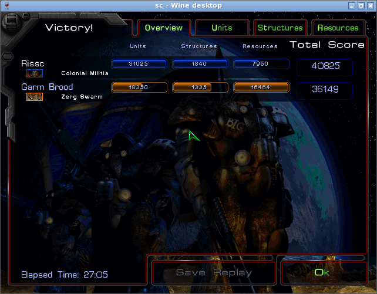
Jacobs Installation
Цель: забрать диски с данными из сети Конфедерации, Рэйнор должен выжить. Четвёртая миссия пока не поддалась. В первой попытке отряд метался по карте в поисках цели. Во второй застрял у маяка. Правила для этой миссии пишутся заново.
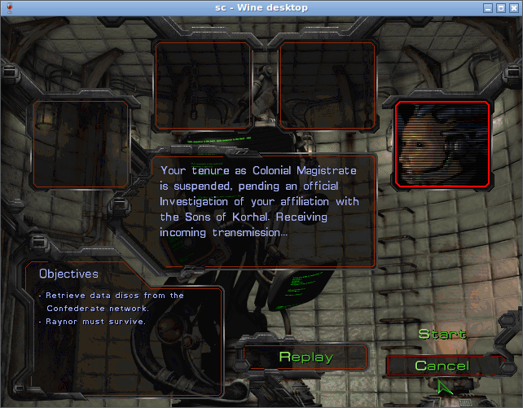
Перед каждой миссией агент сохраняет игру через её обычное меню. Если программа проиграет, мы начнём с этой точки. Чужие файлы сохранений для этого не нужны.
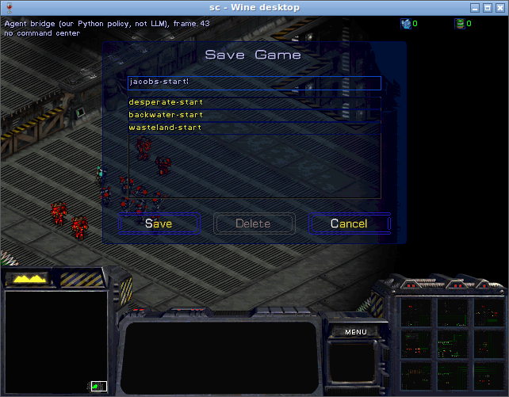
Кто за что отвечает
Всю работу ведёт оркестр: человек и несколько агентов с разными ролями. У каждого свой участок, и пересекаться они не должны.
- Я. Цель, диск с игрой и разрешение скачать архив игры. Остальные загрузки согласует оркестратор: адрес и размер названы заранее.
- Оркестратор. Claude Code с Opus 5.5. Раздаёт задачи, принимает результат и записывает его в репозиторий. Исполнители сами ничего в репозиторий не пишут.
- Оператор окна. Агент на Sonnet 5.5. Он один владеет окном игры и вводом: Wine, запуск, скриншоты, мост, программа-игрок. Два агента с мышью в одном окне быстро испортили бы друг другу ход.
- Разборщик. Агент на Sonnet 5.5 с REA. Читает файл игры, но игру не запускает. Его вывод принимается только с уликой: адрес, контрольная сумма файла, номер улики.
- Исследователь. Ищет чужой опыт в открытых источниках через модель GLM 5.3 Flash и поисковик Exa. Он нашёл ошибку Wine и способ достать кампанию с диска. Глубокие исследования через ChatGPT и Grok стоят в очереди: браузер к сессии пока не подключён.
Каждое утверждение исполнитель помечает одним из четырёх слов: измерено, подтверждено источником, предположение, неизвестно. Так в журнале видно, где факт, а где догадка.
Какие принципы пригодятся вам
Игра тут скорее повод. Ниже то, что работает для любой задачи, которую вы отдаёте агентам.
Правила честности пишутся до первого запуска
Когда результат уже получен, спорить о правилах поздно. Поэтому победу и запреты записывают заранее. Как с настольной игрой: правила договаривают до первого хода.
Результат проверяет посторонний
Победу подтверждают признаки, на которые исполнитель повлиять не может. Когда их несколько и они независимы, одна ошибка не пройдёт. Как судья на матче: игрок не засчитывает себе гол.
У общего ресурса один владелец
Окном игры и мышью управляет один агент. Остальные просят его о снимке или нажатии. Как на кухне: у плиты один шеф, иначе двое одновременно посолят суп.
Исполнитель приносит доказательство
Вместо «получилось» агент приносит скриншот, адрес в коде или запись журнала. Вывод без следа проверить нельзя. Как курьер приносит накладную с подписью: слово «доставил» без неё не считается.
Сохраняйтесь до рискованного шага
Перед каждой миссией делается сохранение, и поражение стоит одну попытку. Откатиться дешевле, чем разбираться, что сломалось. Как фотографируют проводку перед ремонтом: потом пригодится.
Журнал хранит и провалы
Неудачная попытка записывается вместе с текстом ошибки, и в следующий раз её не повторяют. Что не получилось, остаётся данными. Как бортовой журнал самолёта: туда пишут каждую неисправность.
На чём мы споткнулись
Мост подключался только из меню. Похоже, во время миссии канал связи с игрой занят, и мост не может подключиться. Почему так под Wine, точно не знаем, это пока гипотеза. Теперь мост запускается до загрузки миссии.
Мост падал на второй миссии подряд. Когда несколько миссий шли в одной запущенной игре, он сыпал ошибками. Теперь на каждую миссию запускается свежая игра.
Деньги уходили на морпехов. Рабочие заказывали склады и казармы без запаса минералов. Пока рабочий шёл к месту, минералы уходили на бойцов. Часть построек заказывалась дважды. Теперь программа откладывает минералы под заказанную постройку.
Повторный приказ игра отклоняет. Двадцать один раз программа велела одному морпеху атаковать ту же цель, и BWAPI отказала. Теперь программа не повторяет команду.
Экран итогов не закрывается сам. Разбор предупреждал, что экран итогов может закрыть BWAPI. На деле он стоит, пока не нажмут кнопку. Для проверки это удобно: победа остаётся на экране.
Как повторить
- Проверьте, есть ли у вашей игры библиотека для программ-игроков. У StarCraft это BWAPI. Без неё программе нечем подключиться к игре.
- Запишите правила честности. Окно видно, туман включён, читов нет, победа только по экрану игры.
- Найдите машину, где игра запускается. Если Mac не тянет, возьмите обычный сервер с виртуальным экраном.
- Используйте свой диск. Законная копия игры нужна вам самим. Чужую кампанию не качайте.
- Начните со скриншота. Добейтесь, чтобы в окне открылось главное меню, и снимите его. Потом добавляйте остальное.
- Назначьте одного владельца окна. Остальные агенты только просят его о снимках и вводе.
- Заведите разборщика для вопросов про устройство игры. Требуйте от него улику к каждому ответу. Разбор не должен выходить за лицензию игры.
- Пишите программу-игрока по одной миссии. Сохраняйтесь перед каждой, а победу проверяйте тремя способами.
В третьей миссии враг долго не показывался. Программа почти полчаса строила бункеры и ждала. Волна пришла за две минуты до конца таймера, и бункеры её удержали. В четвёртой миссии отсидеться на базе не выйдет: за дисками с данными надо идти по карте. Первые две попытки там не удались. Гайд обновляется, и четвёртая миссия появится здесь, когда на экране встанет «Victory!».
Подход и сообщество: руководство SSCAIT, BWAPI, JBWAPI, обсуждение про кампанию. Архив версии 1.16.1: ресурсы Дейва Чёрчилла. Диск и INSTALL.EXE: заметка Blizzard о патче 1.15.2. Ошибки Wine: 60034 и 57758. Разбор: REA, Ghidra, открытый движок OpenBW. Весь проект: репозиторий, наше исследование и журнал REA. Цели миссий взяты из брифингов самой игры. Субагенты и оркестровка: документация Claude Code. Мои слова главному агенту слегка отредактированы: убраны опечатки, тире заменено двоеточием.
Сам проект живёт в моих каналах: канал «рис. AI», YouTube и чат вайбкодеров.